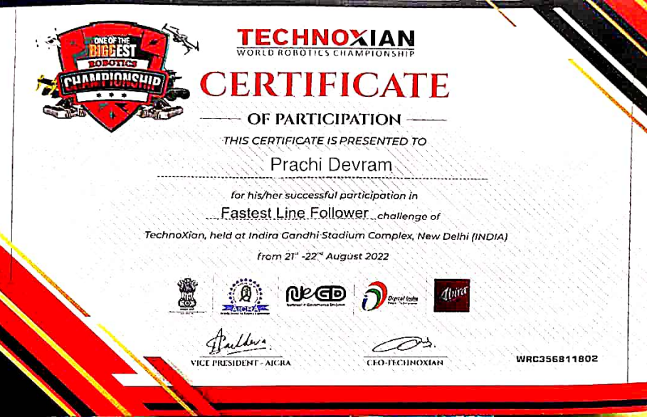
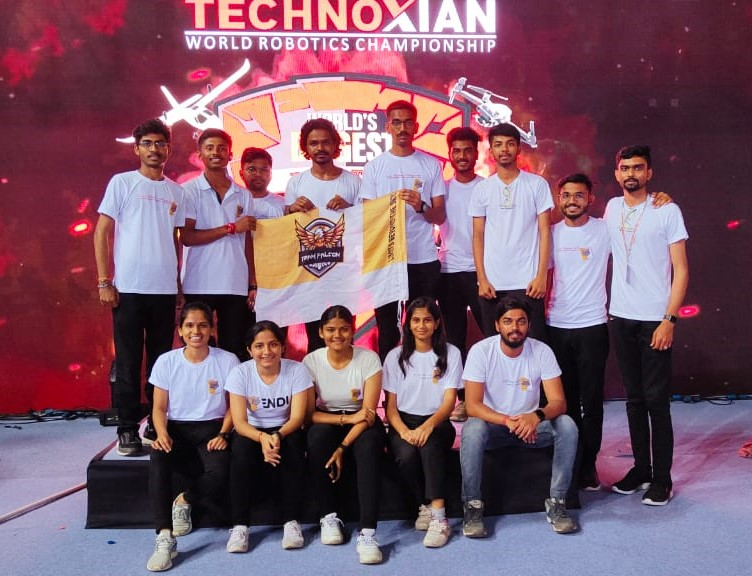
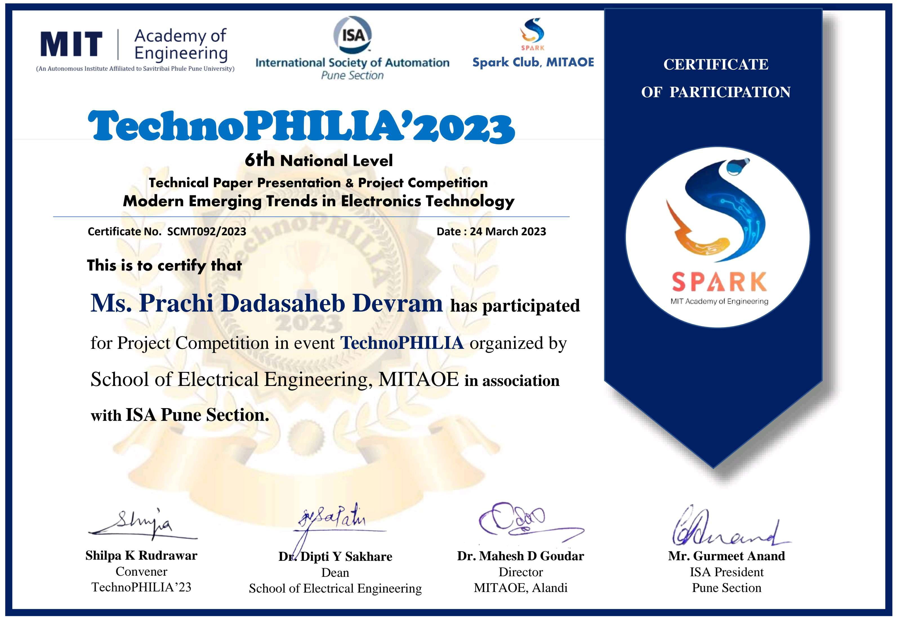
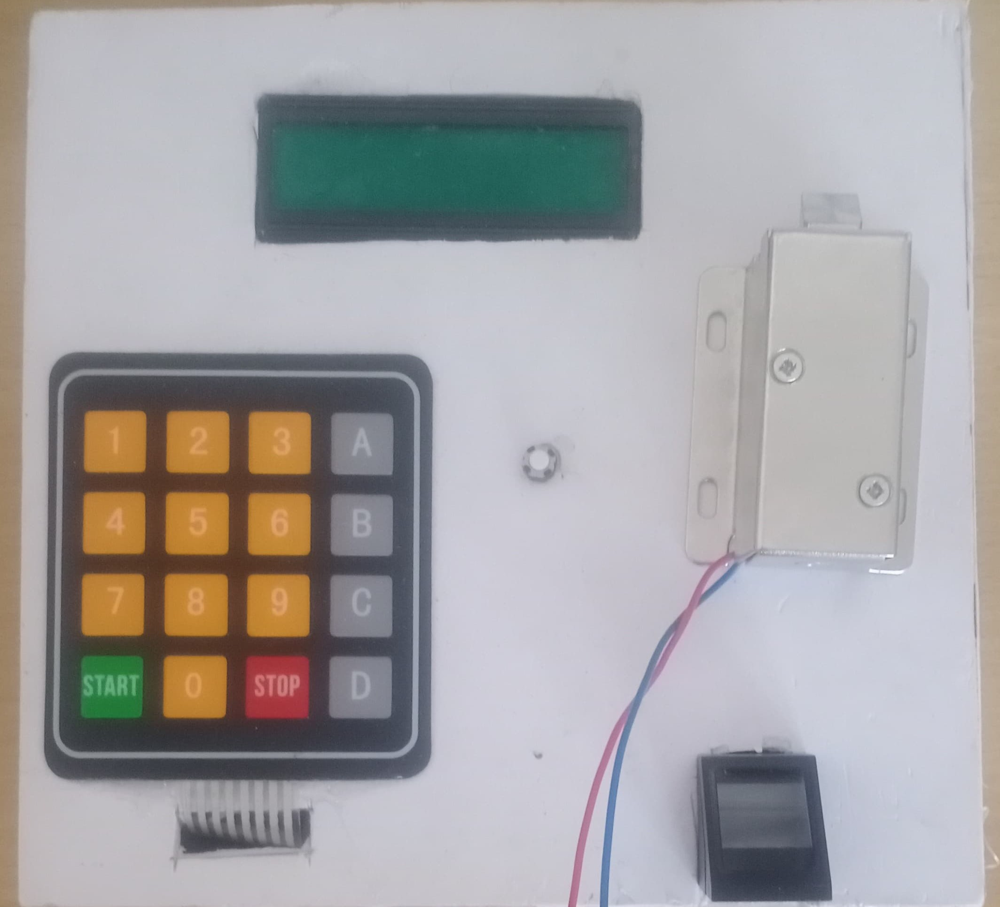

Voice Assistant of ChatGPT
Final Year Project 2023-24
Objective: 1. To obtain voice output from ChatGPT by giving voice input. 2. Integration artificial intelligence with Electronics using ESP32.
Technologies: 1. Fetching data from ChatGPT using API with Postman Application. 2. Speech to text Conversion using Goggle STT services with ESP32. 3. Text To Speech Conversion using Google TTS services with ESP32.
Applications: 1. Healthcare, to Assist with medical inquiries, medication reminders, and even offer basic health advice. 2. Education, can act as virtual tutors, answering questions and providing explanations.
A. Embeded Projects
1. Fastest Line Following Robot
Attained 4th international rank at WRC, Delhi 2022
Objective: Preparing a robot which follows black line.
Working Principle: PID Algorithm
Challenges Faced:
We had to complete our project within one month for the competition. Within that month we had to order all compoents, test them and apply working prininciple of PID algorithm.
First Challenge we faced was unavalability of sensor on official website. So we ordered it from other website which was not trusted but we had to take risk.
Second Challenge was Designing the arena. It was wrongly designed at first and was in small size. We then started designing arena with larger diamensions
Then, after all mounting on PCB board our robot was not working beaucse by mistake it was fallen down from table There was connection loss between pins, we corrected it again
Main Challenge was testing values of kp, ki and kd for accurate line Following. Our senior invested a lot of time to test different values finally we reached some values that are approriate for our sensor and finalised them.
Solution: Finally, we reached at successful opearation robot which was accurately following the balck line.
Applications: Can be used in Industrial automation, Home Automation and at restaurants for serving food.
-
Glimps from Event
-
Symatics of Robot
-
Certificate of Event
 -
Our Team

My Delhi Experience
Travelling to an unknown city for the first time with our seniors for a project competition was an incredible experience. Exploring Delhi's most iconic landmarks such as 'India Gate', 'UPSC Bhavan', 'Red Fort', and indulging in shopping at 'Sarojini Nagar' added to the richness of our visit.
Along with these amazing experiences, we also encountered new challenges in the new city. We faced difficulties finding a hotel for our team of 14, sourcing good food, locating transportation to travel to the event venue and other places we wished to visit. During the event, we discovered that our registration was incomplete; having completed only one step, we were initially not allowed to participate. However, we made considerable efforts to convince the organizers, and eventually, they permitted our participation.
Despite encountering numerous problems and challenges, we never lost hope and gave our best. Our team spirit and determination played a crucial role in achieving the 4th international rank at the World Robotics Championship organized by Technoxian in Delhi.
I learned how important it is to have faith in the team and work together for its success. There was a participant from Uzbekistan who did not have a team; he encountered numerous problems, and his robot was not working. We extended our help as much as possible, but due to language barriers and a lack of motivation, he couldn't clear the first round and was eliminated. This situation made me realize the significance of having a team for competitions like this.
2. Smart Door locking System
TE mini project
Objective: To make efficient and secure door locking system
Technologies: Arduino IDE, Biometric and Matrix Keypad.
Challenges Faced:
While working on our project, our primary objective was to create a dual-step authentication system that would only grant access when an authorized person entered. We integrated both a matrix keypad and biometric scanner for this purpose. However, during the practical implementation, we encountered several issues.
Initially, we found that the door could be opened separately using either the password or the biometric scan, whereas our intention was to have a two-step verification process—first, the password, followed by the fingerprint. Despite our attempts, we couldn't achieve this desired sequence.
Additionally, we faced minor challenges such as configuring the LED connections with the Arduino and adjusting the contrast. We also encountered issues with downloading necessary libraries and uploading the code into the Arduino board. However, through persistent effort and a trial-and-error approach, we managed to overcome these hurdles.
Ultimately, after troubleshooting and refining the system, we successfully resolved these issues, and the project functioned as intended.
Applications: Can be used at various places like chemical industries, Homes, Colleges, jewellery shops, etc where authorized person have permission to enter door.
-
Demonstration
-
Presentation
-
Certificate of Event
 -
Prototype

3. DIY development Board Of Arduino ATMega328P
Eyantra Lab Activity 2021
Objective: Developed an Arduino Board using ATmega328P which works same as Arduino uno
Work: Done soldering, handled required electronic components and studied data sheet of ATmega328P
Challenges Faced:
Absolutely, here's a simplified version: "Since this was our first project, everything felt brand new and exciting. Soldering neatly was tough at first, but luckily, we had a senior to show us the ropes. They patiently guided us through each step, teaching us how to read datasheets, make connections, and even create our own Arduino board. Their help was crucial, especially when everything seemed unfamiliar. With their support, we managed to tackle challenges that initially felt overwhelming."
-
Rotating Servo motor on Arduino DIY Board